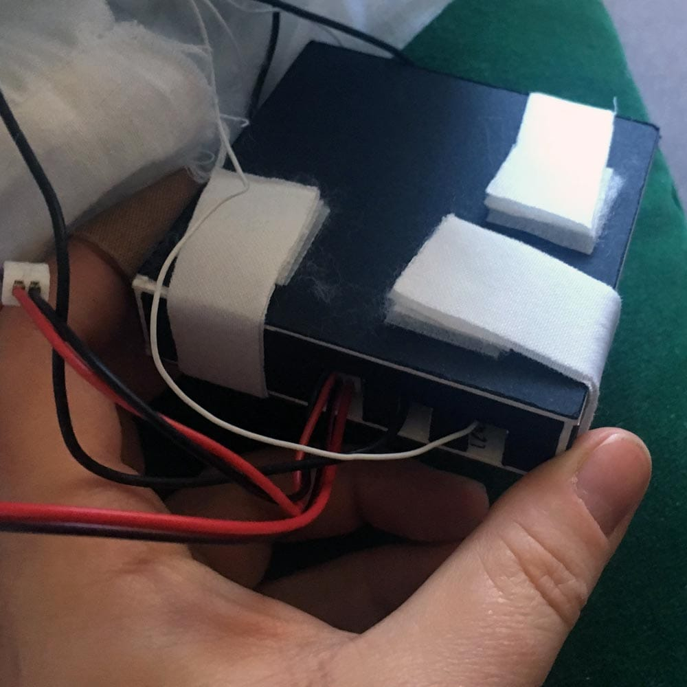

I began by researching soft circuits. It's a great time to hole up in your lab and ask the internet things. The websites I depend on most are Adafruit, Kobakant, Sparkfun, and Instructables. This was my first soft circuit. It was fun to build but needed to be modified for a softer touch.
Conductive Fabric
There are a lot of conductive fabrics available – from tape to fabric to yarn. I got an assortment from LessEMF to test different sensitivity.
Velostat
Velostat can be a great resistance measurement fabric which is interesting if one wanted to explore different button responses based on pressure. While initially excited by early results using an Arduino Uno, I found the Velostat to be too sensitive regardless of fabric type.
Button Location
This was an early sketch to conceptualize button placement.
Drilling Holes
To make a nice button using conductive fabric, the best way I can find so far is separate two pieces of conductive fabric by a thicker layer of fabric with holes cut out so that when contact is made, the two conductive fabrics meet and trigger the audio. Cutting these holes by hand with a scissors gets messy so I found hole punching drill bits. The fabric (neoprene) did not comply but tests got better once I stabilized the fabric with cotton.
Drilling into stabilized fabric proved best
The brain inside the pillow
I researched boards with MP3 capabilities and determined I was interested in finding a board that supported stereo, 44.1 kHz sound, had an onboard amplifier, and had a headphone jack (handy for testing). I decided to work with the LilyPad MP3. I built a box to keep it safe from the soft pillow stuffing and used Velcro as a handy way to keep it closed. I added a power switch so I could turn the pillow on and off without having to unzip it and dig inside.

Speakers and Wires
I thought a lot about speakers and what sort of interaction I wanted to create. I found pillow speakers, tiny speakers, and eventually these 8 Ohm 1 Watt speakers. I also thought about creating my own speakers with surface transducers but at the moment I’m still pursuing the 1 amp speakers. I determined that part of the project was to become part of the experience so that nearby people could hear the audio and witness the participant’s reaction.
I was lucky to find this amazingly thin silicon wire at Adafruit. The battery pictured is for scale. You can see the inside of the pillow just before I soldered the wires to the speakers and then to the board. The prototype is working but naturally, needs to be refined. One task is to bury the speakers in foam to make the surface softer.
Multiple Buttons
One idea I'm still toying with is to add multiple buttons on the front and back of the pillow to make triggering the audio easier and faster. I prototyped the circuit to see if it would work and it will!